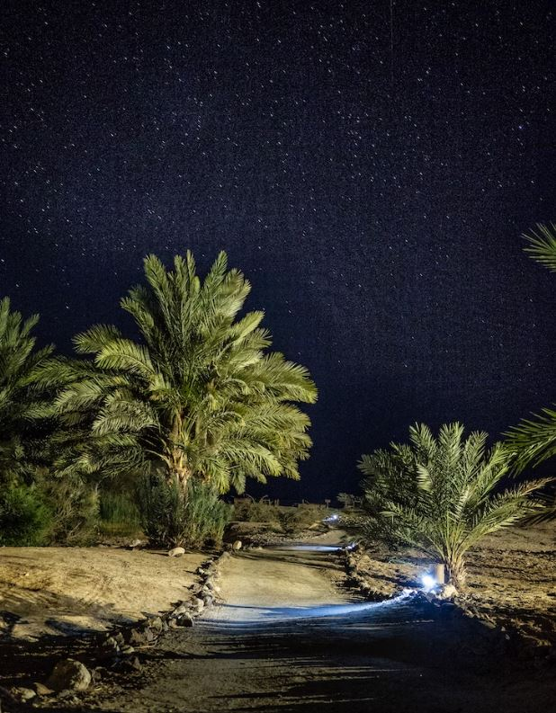

La Meseta de Loess es una de las principales cunas asiáticas, por su suelo fértil y su gran cantidad de agua. Pero luego de años de sobreexplotación agraria, del uso de arado, herbicidas, fertilizantes y pesticidas, la zona se convirtió en un desierto, con un suelo incapaz de retener el agua y sostener la vida natural. Al perder su suelo fértil, se multiplicaron las tormentas de arena y las inundaciones, ya que el agua fluye sin control ante la ausencia de raíces que sujetarán la tierra, que tenía cada vez menos nutrientes y humedad.
Científicos del gobierno chino identificaron que el problema era que el suelo no podía almacenar agua y cada vez llovía menos, ya que alrededor del 40% de la lluvia proviene del ciclo corto del agua que genera el vapor de agua que expulsan las plantas a través de las hojas (por eso, cuantas más plantas, más lluvias; si hay menos plantas y menos suelo fértil, menos lluvias y más desierto). La única solución era reverdecer toda la región, de 640 mil kilómetros cuadrados (dos veces el tamaño de Alemania).
En teoría, era imposible. Pero el gobierno chino tomó una importante decisión: pagarles a los agricultores para regenerar la naturaleza. Así, durante años, los habitantes de la meseta se volcaron activamente al trabajo. Hicieron bancales en las colinas para retener el agua en el suelo; plantaron millones de árboles y arbustos y, finalmente, el agua y la vida comenzaron a hacerse paso, así como la prosperidad económica de los agricultores y de toda la región. Las consecuencias globales fueron enormes, ya que la naturaleza volvía a capturar enormes cantidades de Co2 atmosférico -el principal gas de efecto invernadero.
Inspirado por el caso de Loess, hay muchos ejemplos sobre la regeneración de terrenos, como el de la Península de Sinaí, que se intenta reverdecer con ayuda del gobierno egipcio, con un plan para reactivar el ciclo del agua en la región. Apostemos por la agricultura regenerativa, que produce alimentos sin destruir la naturaleza y sin fertilizantes químicos. Necesitamos regenerar toda la red de biodiversidad para seguir dando pasos en la lucha contra la crisis climática. No hay tiempo que perder.